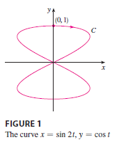

Suppose that \(z = f(x, y)\) is a
differentiable function of \(x\) and
\(y\), where \(x = g(t)\) and \(y = h(t)\) are both differentiable
functions of \(t\). Then \(z\) is a differentiable function of \(t\) and \[
\frac{dz}{dt} = \frac{\partial f}{\partial x} \frac{dx}{dt} +
\frac{\partial f}{\partial y} \frac{dy}{dt} \]
EXAMPLE 1 If \(z = x^2y +
3xy^4\), where \(x = \sin 2t\)
and \(y = \cos t\), find \(dz/dt\) when \(t
= 0\).
It’s not necessary to substitute the expressions for x and y in terms
of t. We simply observe that when \(t =
0\), we have \(x = \sin 0 = 0\)
and \(y = \cos 0 = 1\). Therefore \[ \left. \frac{dz}{dt} \right|_{t=0} = (0 + 3)(2
\cos 0) + (0 + 0)(-\sin 0) = 6 \]

The derivative in this example can be interpreted as the rate of
change of \(z\) with respect to \(t\) as the point \((x, y)\) moves along the curve C with
parametric equations \(x = \sin 2t, y = \cos
t\). (See Figure 1). In particular, when \(t = 0\), the point \((x, y)\) is \((0,
1)\) and \(dz/dt = 6\) is the
rate of increase as we move along the curve C through \((0, 1)\). If, for instance, \(z = T(x, y) = x^2y + 3xy^4\) represents the
temperature at the point \((x, y)\),
then the composite function \(z = T(\sin 2t,
\cos t)\) represents the temperature at points on C and the
derivative \(dz/dt\) represents the
rate at which the temperature changes along C.
EXAMPLE 2 The pressure P (in kilopascals), volume V
(in liters), and temperature T (in kelvins) of a mole of an ideal gas
are related by the equation \(PV =
8.31T\). Find the rate at which the pressure is changing when the
temperature is 300 K and increasing at a rate of 0.1 K/s and the volume
is 100 L and increasing at a rate of 0.2 L/s.
SOLUTION If t represents the time elapsed in
seconds, then at the given instant we have \(T
= 300, dT/dt = 0.1, V = 100, dV/dt = 0.2\). Since \[ P = 8.31 \frac{T}{V} \] the Chain Rule
gives \[ \frac{dP}{dt} = \frac{\partial
P}{\partial T} \frac{dT}{dt} + \frac{\partial P}{\partial V}
\frac{dV}{dt} = \frac{8.31}{V} \frac{dT}{dt} - \frac{8.31T}{V^2}
\frac{dV}{dt} \]\[ =
\frac{8.31}{100}(0.1) - \frac{8.31(300)}{100^2}(0.2) \approx -0.04155
\] The pressure is decreasing at a rate of about 0.042 kPa/s.